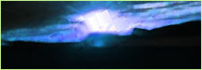
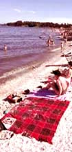
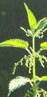

Juryen som velger ut Månedens Poetikon består av Håvard Rem (forfatter), Mariann Aalmo Fredin (kulturjournalist i Dagbladet), Morten Skogly (nettkunstner), Ingrid Sande Larsen (Dagbladet :litteratur) og Unn Conradi Andersen (ansvarlig Dagbladet :litteratur).
HTML og grafikk er ved Morten Skogly.
Har du et sommerdikt, sommerlyder, sommerbilder, sommerhistorier? Send det til tralala@poetikon.org.
Tralala er et samarbeid mellom Dagbladet.no og nettstedet Poetikon,
- Opptak fra stranden i Barcelona. Et kjærestepar ligger på et pledd og ser på glassbiter og steiner de
har plukket i strandkanten. Etterpå går de og plukker er. Man kan høre bølger og spanske stemmer
i bakgrunnen.
02:10 + 05:20, 32 kbps RealAudio. - Elingaard, Fredrikstad. Et gammelt piano og en åpen dør. Utenfor kvitrer fuglene. På kjøkkenet lager noen mat.
01:00, 32 kbps RealAudio.Har du noen sommerlyder? Send dem til tralala@poetikon.org.
Har aldri kyssa
i ein tom nedlagt silo
Full av leikne kattungar
og gammalt høy
Med ekko i den grå murveggen
og klamme regnjakker på
I ung løyndom
og med trommeregn på taket
Aldri igjen
Sendt inn av: Mona Vetrhus
E-post: monavetrhus@hotmail.com
gi meg bare den skandinaviske blå sommeren
som skapes i havet og kravler oppover
sandblåste jorder
ender i hvite hus engang sent i august
ustanselig forelsket i røde låver
som stryker deg over glassklare kinn
hvisker ord om gjenkomst
selv før noe tar sin ende
lukten av havslipte stein
Sendt inn av: Mari Nymoen
E-post: mnymoe@online.no

Nypult og solbrent
i varm sand
sand så varm
at jentene
speiler seg
i den
på huk
De sitter på huk
i sine lilla strikktruser
og lange wienerbrødfletter
og ser på meg
ser at det ryker
såvidt
av
nypult og solbrent
Sendt inn av: Guttorm Andreasen
E-post: guttorm.andreasen@nrk.no
ikke det høflige skinn av panne
eller underarmens vage skille
svette men søtt, den fulle
utporende drenering av kropp
som pumper
mens vi sirkulerer, guddommelig svalt
gjennom ått'ogtyve lumre grader
svetten plasker - nærmest
fra hender som kliner i hilsninger
her og der, leter mot andres
kjente disige blikk
kysser en nakke, øyenbryn som drypper
nese og kinn og vi svinger i omkranset damp
klister-skjorter som dynket i svette
kald og våt å ta på
hår plastret til pannen
dagen lang
rushe til havet og sist
inn for å vaske salt, bli ren
i hver eneste pore og sove
Sendt inn av: David Mikalsen
E-post: i-tollef@online.no
flammende begjær og
tentakler som kiler
en kropp uten klær
på en sandstrand og hviler
slikker en stråle
med en tunge fra varmen
jeg kunne vel tåle
en kjæreste på armen
Sendt inn av: anonym
 Kjære sol,
Kjære sol,
Så høge fjell og klive over!
Så tjukke skylag å trenge gjennom!
Og likevel fann du meg her
under skylaga
mellom fjella
i toppen av dette morelletreet
der eg nett har klive opp
for å møte deg på halvvegen.
Sendt inn av: Lasse
E-post: ltraedal@online.no
Brenneslesuppe og pannekaker
Lukten av vår og varmt smør
og kjæresten min på kjøkkenet
Hun har en sommerfugl
på låret
Det sitter en sommerfugl
på låret ditt,
sier jeg
Hun sier
kom og spis
Sendt inn av: Tor Mindrebø
E-post: tor@mindreboe.net